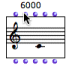
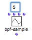
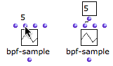

OpenMusic DocumentationHiérarchie de section : OM 6.6 User Manual > Visual Programming I > Box Inputs > Standard Inputs
OpenMusic DocumentationHiérarchie de section : OM 6.6 User Manual > Visual Programming I > Box Inputs > Standard Inputs
Navigation : page précédente | page suivante
Attention, votre navigateur ne supporte pas le javascript ou celui-ci à été désactivé. Certaines fonctionnalités de ce guide sont restreintes.
Standard Inputs
Information and Default Values
Getting Information : Tooltips

|
To display information about an inlet, keep
|
Default Values
All box inputs have default values that are used by the box if no values have been specified by the user, or if the box is not connected to anything. To visualize the default value of an inlet, hover the mouse over it. If it is connected to any kind of component – such as a value or a box – this default value will be ignored. |

The default pitch of a note is 6000 midicents, that is, a C4.
|
Getting Information about Inputs
Entering Values
To enter a value in an inlet :
The value remains hidden unless you hover the mouse over the inlet. |

|
|

|
Saving Values
Always validate after entering a value in an inlet :
- **** click in the window
- press
Enter.
This is very important since default values can remain hidden.
Input Menu
When the number of possible values is very limited for an argument, some functions display a pop up menu where the user can pick the desired value.
To chose a menu item, click on the input, and click again in the pop up menu.
The list-filter function has three arguments : the numberp predicate, a list and an action (pass or reject). Here, it passes numbers only (pass
- numberp) and returns (2).
Références :
Plan :
Navigation : page précédente | page suivante
A propos...(c) Ircam - Centre Pompidou